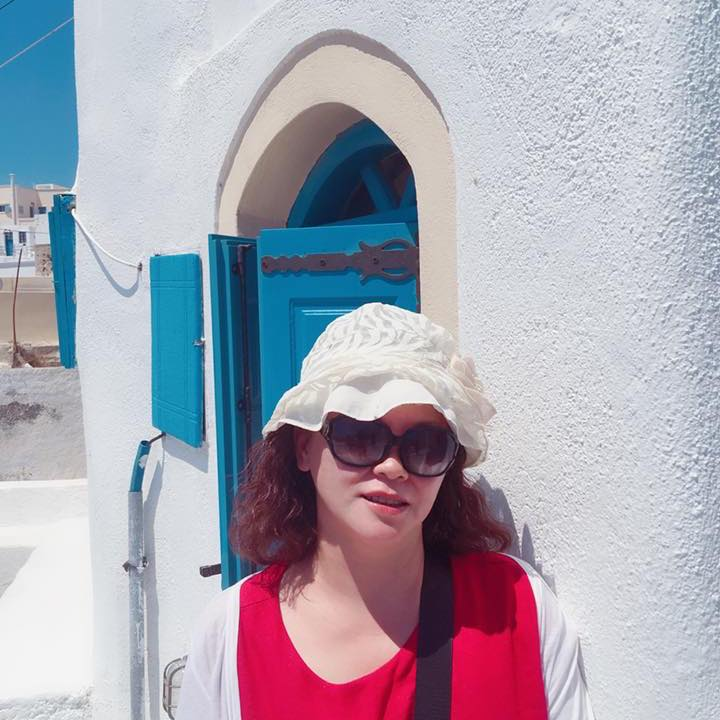

黃詩喬
1965 年出生於新竹市。
致力於人文意象水墨創作研究，將傳統筆墨與當代思維結合。
從地方城隍廟的塗鴉小童一路挺進藝術專業的學府
孩提時代的黃詩喬，住在新竹都城隍廟附近，總和鄰家孩童們一同於新竹街區寺院廟宇間奔跑穿梭玩耍。每日映入她眼簾的，就是廟宇裡關於忠孝節義故事的壁畫，那些帶點斑駁卻不失劇情張力的壁畫總教黃詩喬著迷，抓了鉛筆和紙就趴在廟埕地磚上開始模仿著塗鴨畫畫。這便是黃詩喬繪畫興趣的源起－如此融合著地方印象的記憶。
中學時期經由多位美術老師指導，獲得無數新竹市內美術獎項，更鞏固了黃詩喬在美術方面鑽研學習的決心，也一舉考進國立臺灣藝術專科學校(今國立臺灣藝術大學)。在學期間她用心學習和廣納各師長的繪畫特點，如李奇茂老師對人物和動物的描繪；蘇峯男老師如何掌握水果晶瑩剔透感覺的拿捏和山水畫的用筆；陳丹誠老師於書法方面的提攜指點，和書畫家周澄修習篆刻。在此之中，黃詩喬尤受羅振賢老師外出寫生和山水理論的影響深遠，畢業後工作之餘另找嶺南派畫家黃磊生老師研習山水花鳥蟲魚走獸畫法，而後又進入臺藝大在職專班修習學分，研習水墨大師胡念祖老師的國畫，並為水墨畫家黃才松老師水墨創作的視覺映象畫境所衝擊，從此習得各藝術家前輩最精粹的功夫，讓黃詩喬水墨書畫能力更為精進扎實。
混融水墨特殊技法畫出海內外的迷濛美景
既然學會各家特長，也下了苦功，黃詩喬的畫作裡可見其擅工筆也能掌握寫意的墨韻。在繪畫專業訓練的前期，黃詩喬熟練以往老師所教的寫實畫風，可是寫實畫風無法讓黃師喬找到個人風格的立基點，繼而嘗試抽象切割的畫面意象，卻又覺得過於粗獷和平面化。如此反覆摸索調整，近年黃詩喬在嘗試水墨特殊技法時，帶入潑墨和鹿膠的運用，營造出半工帶寫、光彩迷濛的美感，透過似有薄霧壟罩般的自然風光景色傳達內心感觸，找到寫境也寫意的個人繪畫風格。例如作品〈望見臺灣〉即是記錄某次在森林散步之時，突然仰頭望見樹梢縫隙間露出的天空，狀似臺灣島嶼，欲表達此一種向上望的視角，黃詩喬反覆構圖了五次才找到最近似的視線模擬，加上了心境的融入，讓她的作品在墨彩層次豐富中，能窺見新視野。
黃詩喬偶爾和丈夫四處旅遊，藉著旅行拓展視野的同時，她也會特別留意觀察世界各地的特色畫法，吸收和中國繪畫不一樣的繪畫方式。她更留心各地美景，因為除了多看展覽和閱讀之外，旅遊是黃詩喬最大的創作養分來源。黃詩喬到處寫生外國景點和風情，但她寫生的不僅是風景，更包含了心境，她並不總是一五一十的照實寫生，而是加上個人的繪畫語言符號，於作品中表達一種感觸的意象，經由個人詮釋轉化為融入唯美觀點的旅行特色繪畫。
樣樣都教 只為傳承美育
自小於繪畫方面獲得眾多師長指導的黃詩喬，從大學畢業後旋即投入美術教育事業。一開始，黃詩喬創設幼兒才藝研究機構，著手研究陶藝、黏土等幼兒美術相關的教具開發製作。投入大量心血設計新穎的教材，在外教學有成遂開辦自己的美術教室，一眨眼也已經營了三十餘年。黃詩喬三育美術教室的學員年齡層廣布幼稚園至高中，以素描水彩為主要教學內容，不僅如此，其課程從兒童繪畫興趣開發到中學生專業術科考試準備皆有。得之於人受之於人，曾經被諸位藝術前輩拉拔起的黃詩喬，也轉頭奉獻大把時間精力扶植後生晚輩，用藝術一脈相承，讓「美」在大小朋友心中滋養不息。

封面照片：忘極 - 枯山水
「是故易有太極，是生兩儀；兩儀生四象，四象生八卦，八卦定吉凶，吉凶生大業。」 從易經的理念來發想，是圓形的象，因此做這樣的創作。 圓形構圖的畫面比較微妙，一來是它的畫幅更加小，能容納的東西更少，所以就要有所取捨，二來是焦點集中，其實這是一個優點，能讓觀者的目光聚焦在圓心，避免分散注意力，另外就是平衡，圓的形狀本身就很奇妙，它沒有稜角，但看上去卻非常穩，富有古典的韻味，略帶一絲東方玄妙的禪意。 我們古老的太極圖形即是圓，圓形是萬物的初始，是世界的終極，它優雅而靜謐，極富古典韻致，這是筆者想追求的畫面感覺，不斷的螺旋線條迴轉，代表著宇宙混沌之像，最終歸一，而砂石的明暗堆積，灰色系的表現有沉靜之感，有時重複做著一件事物有愈來愈純熟之手感，也相對的引起自信心，可以自由自在地去創作找回快樂的源頭，而莫忘初心。

黃詩喬
自小於繪畫方面獲得眾多師長指導的黃詩喬，從大學畢業後旋即投入美術教育事業。一開始，黃詩喬創設幼兒才藝研究機構，著手研究陶藝、黏土等幼兒美術相關的教具開發製作。投入大量心血設計新穎的教材，在外教學有成遂開辦自己的美術教室，一眨眼也已經營了三十餘年。黃詩喬三育美術教室的學員年齡層廣布幼稚園至高中，以素描水彩為主要教學內容，不僅如此，其課程從兒童繪畫興趣開發到中學生專業術科考試準備皆有。得之於人受之於人，曾經被諸位藝術前輩拉拔起的黃詩喬，也轉頭奉獻大把時間精力扶植後生晚輩，用藝術一脈相承，讓「美」在大小朋友心中滋養不息。
展覽經歷 EXHIBITIONS
- 國立臺灣藝術大學大觀藝廊畢業個展Solo Exhibition
- 桃園市政府生活廣場個展Solo Exhibition
- 國立臺灣藝術大學書畫藝術學系研究生創作展Group Exhibition
- 桃園市美術家邀請展Group Exhibition
- 桃園市美術協會聯展Group Exhibition
- 國父紀念館畢業聯展Group Exhibition
- 臺灣省立美術館畢業聯展Group Exhibition
- 臺南社教館畢業聯展Group Exhibition
- 中正紀念堂畫會聯展Group Exhibition
- 國父紀念館畫會聯展Group Exhibition
- 嶺南派三石畫會聯展Group Exhibition
- 全國膠彩畫聯展Group Exhibition
- 中日韓書畫聯展International Group
- 新竹市文化局聯展Group Exhibition
- 新竹縣文化局聯展Group Exhibition
- 國內外聯展多次Group Exhibition
得獎紀錄 Awards
- 第二名 - 新竹學生美展水墨類
- 優選 - 全國繪畫創作國慶杯
- 優選 - 新竹美展水墨膠彩類
- 佳作 - 全國大專青年水墨類
- 佳作 - 國軍文藝金像獎國畫
- 佳作 - 桃源美展膠彩類
- 佳作 - 新竹美展水墨膠彩類
- 入選 - 全省美展水墨類
- 入選 - 新竹美展水墨膠彩類
專業資歷 Experience
- 理事 - 桃園市美術協會
- 理事 - 桃園市台藝美術協會
- 會員 - 嶺南派三石畫會
- 會員證書 - 中華民國兒童美術協會
- 家元教授 - 日本小原流花藝
- 班主任 - 方圓幼兒才藝機構
- 班主任 - 三育美術補習班
學歷 Education
- 國立臺灣藝術大學書畫藝術學系碩士
- 國立臺灣藝術大學美術系
- 國立臺灣藝術專科學校
- 新竹市新竹女中
著作與出版 Publications
- 《心齋坐忘．人文意象水墨創作研究》
- 《漫觀遐想 黃詩喬彩墨畫集》
- 桃園之美藝術家叢書-水墨類藝術家
典藏 Collections
- 美國夏威夷大學通訊研究中心
- 元智大學電機工程學系通訊研究中心
- 私人收藏